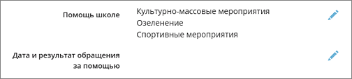

На этом экране можно отметить, какие виды помощи школе оказывал данный конкретный родитель.
Предварительно необходимо указать Виды помощи в соответствующем поле в личной карточке родителя:

Список возможных видов помощи не задан жёстко, его можно отредактировать в пункте меню Управление -> Сведения о школе на экране Справочники.
Для того чтобы отметить конкретный факт обращения за помощью, требуется обязательно заполнить поля Дата обращения и Тип помощи (отмечены звёздочками). Результаты обращения школы за помощью могут быть следующими: